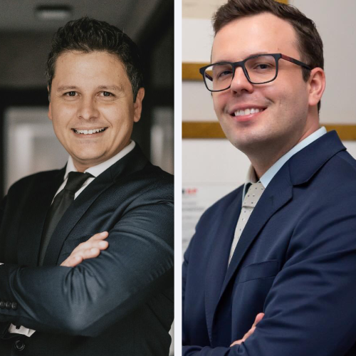
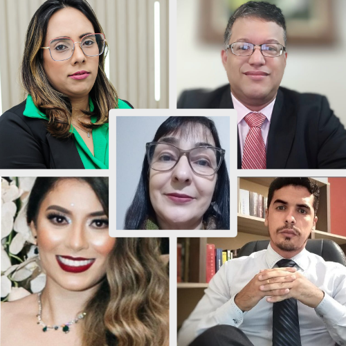

1° dia (09/09)
DDM Online da Polícia Civil de SP
fortalecendo as políticas públicas de enfrentamento à violência
doméstica
com Dra. Patricia Pacheco Rodrigues Machida
450 vagas
Cursos
Convidados
19h00 às 22h00
Auditório Jamil Salomão
Delegada da Polícia Civil em São Paulo, no Departamento de Inteligência-DIPOL;
Doutora e Mestra em Direito pela Universidade Nove de Julho (UNINOVE). Professora de pós graduação e
da Secretaria Nacional de Segurança Pública (Senasp) do curso de Polícia Comunitária Aplicada.
Palestrou na Escola da Magistratura do Estado do Rio de Janeiro (EMERJ); na Facultad de Derecho de
la Universidad de Buenos Aires, no GEHESC - Concordia - Argentina; na Universidad de Salamanca e na
UCLM Toledo – Espanha; na Universidade Aberta (UAb) e Associação FORGES, Lisboa, Portugal; na Escola
de Direito da Universidade do Minho-Portugal; na Université Paris 8. Foi de 2010 - 2011 Escrivã de
Polícia Civil em São Paulo; 2011 - 2014 Advogada em São Paulo; 2014 - 2016 Delegada de Polícia Civil
no Paraná onde acumulou as funções durante a Copa do Mundo 2014, Delegada Titular e da Cadeia
Pública. Autora, Coordenadora, Organizadora e Coautora em obras Jurídicas e de Educação e autora de
artigos científicos. Parecerista: Revista científica Dialogia da UNINOVE-PROGEPE (Qualis B1);
Revista Brasileira de Segurança Pública (Qualis B1) do Fórum Brasileiro de Segurança Pública.

2° dia (10/09)
Exame de Ordem:
compromisso com os estudos de preparação durante a graduação
com Dr. Darlan Barroso
450 vagas
Cursos
Convidados
19h00 às 22h00
Auditório Jamil Salomão
Advogado. Doutorando em Processo Civil pela PUC/SP. Mestre em Direito.
Especialista em Processo Civil. Co-fundador do MeuCurso Educacional, onde também é professor de
processo civil e diretor pedagógico dos cursos preparatórios para OAB e concursos públicos. É
Coordenador da Pós-graduação em Processo Civil da UniDomBosco e MeuCurso.
Membro do IBDP.
Autor e coordenador de obras jurídicas pela Editora Saraiva Jur.
3° dia (11/09)
Tribunal do Júri: vivências de um criminalista
com Dr. Willey Lopes Sucassas
450 vagas
Cursos
Convidados
19h00 às 22h00
Auditório Jamil Salomão
Advogado Criminal militante desde 1997; Mestre em Direito pela UNIMEP,
pós-graduado em Direito Penal pela Universidade de Coimbra (Portugal) e pela Universidade de
Salamanca (Espanha); Ex-professor de Direito Penal e Processo Penal da UNIMEP e da UNISAL. Sócio do
escritório SUCASAS TOZADORI ALVES ADVOGADOS.
4° dia (12/09)
O STF e a descriminalização do porte de maconha:
pontos relevantes para o Direito Criminal
com Dr. William Oliveira e Dr. Lucas Torrezan
450 vagas
Cursos
Convidados
19h00 às 22h00
Auditório Jamil Salomão
-
William Oliveira
- Advogado criminalista. Sócio no William Oliveira, Infante, Vidotto e Alves Advogados. Especialista em Direito Penal e Direito Processual Penal pela Escola Paulista de Direito (EPD). Mestre em Direito Processual Penal pela Universidade de São Paulo (USP). Professor de Pós-Graduação na UNINOVE e na Escola Superior de Advocacia (ESA).
-
Lucas Torrezan
- Advogado Criminalista e Professor de Direito Penal e Processual Penal em Cursos Preparatórios para Concursos, OAB, Graduação e em Pós-Graduações. Graduado em Direito pela UNIMEP. Pós-Graduado em Prática Penal e Processual Penal pela Faculdade de Casa Branca. Pós-Graduado em Direito Penal Econômico Europeu pela Faculdade de Coimbra – Portugal (FDUC). Atual Presidente da Comissão de Direito Penal da OAB – 48a Subseção de Americana-SP. Fundador proprietário do escritório Torrezan Advogados Associados.

5° dia (13/09)
Da faculdade para vida real:
os desafios e conquistas depois do 5º ano
com Alunos Egressos de Direito da FAM
450 vagas
Cursos
Convidados
19h00 às 22h00
Auditório Jamil Salomão
-
Dra. Bárbara Monique Luzardi Fontes
- Advogada
-
Dra. Débora Natalia da Silva
- Advogada
-
Dr. Guilherme da Silva Bigoni
- Advogado
-
Dr. Rafael Rodrigues Silva
- Servidor público do Tribunal de Justiça do Estado de São Paulo
-
Dra. Noemia Valadares Sales Silva
- Diretora de Escola Municipal há 13 anos e facilitadora da Justiça Restaurativa no Núcleo do Fórum de Nova Odessa há 2 anos.
- Formação: Curso técnico em Teologia; 1ª Graduação: Pedagogia; Pós graduada em Gestão Educacional (FAM 2006); Pós graduada em Psicomotricidade; 2ª graduação em Direito (FAM); Facilitadora da Justiça Restaurativa: EPM - Escola da Magistratura Paulista; finalizando Curso técnico em Psicanálise.

6° dia (14/09)
Simulado da OAB na FAM
Inscreva-se e boa sorte!
90 vagas
Cursos
Convidados
12h30 às 18h00
Sala Vip I
Inscreva-se no simulado!
-
Vagas limitadas
- Alunos FAM: 70 vagas
- Público externo: 20 vagas
- Entrada para todos com estacionamento liberado (Portaria 5)
Curta se achou a pagina útil e acompanhe Info.FAM